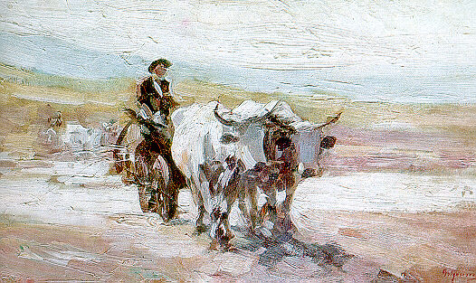
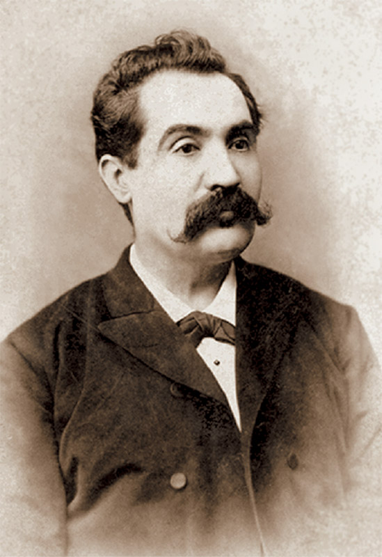

before a state
Constantin Daniel Rosenthal · c. 1850
Revolution gets
a body.
România revoluționară gives the 1848 idea a face: a woman in Romanian dress, carrying the colours of political renewal. It is one of the most direct images in the country’s nineteenth-century memory.
Rosenthal was born to a Jewish family in Pest, studied in Vienna and Paris, and joined the Wallachian revolutionaries around C. A. Rosetti. He did not paint a census of the nation. He painted a proposition: that a people divided between empires could imagine itself as a political subject. Arrested by Austrian authorities while carrying messages for the exiles, he died in prison in 1851. The painting survives as an act of allegiance rather than a neutral illustration.
Paris and Bucharest
Learning
the craft.
Apprendre le métier.
Theodor Aman was among the generation that made a route of the journey west. He studied in Paris with Michel Martin Drolling and François-Édouard Picot, worked in Rome, and returned to Bucharest with a conviction that painting required institutions as much as talent. In 1864, with Gheorghe Tattarescu and the support of Alexandru Ioan Cuza, he helped found the National School of Fine Arts. It offered a studio, a discipline and a public exhibition culture to artists who had previously had almost none.
Aman’s historical canvases gave political memory a scene, but the school may be his more lasting work. A nation was building museums, theatres, papers and classrooms at the same time as it was building ministries. The studio joined that public infrastructure. Art could now be taught, debated, bought, criticised and seen by people who were not members of a court.

Nicolae Grigorescu · Paris & Barbizon
The country
enters the
light.
Grigorescu reached Paris in 1861 on a state scholarship, then found a more decisive education outside it: Barbizon, near the Forest of Fontainebleau. There, the generation around Corot, Rousseau, Millet and Courbet had made landscape and ordinary rural life serious subjects for painting. Direct observation mattered more than heroic finish; weather, soil and work carried their own dignity.
He brought that permission home. His roads, shepherds, ox-carts and women at the river did not turn Romanian peasants into French ones. They put Romanian life inside an international modern vocabulary of light and attention. The National Museum of Art of Romania traces the Barbizon and Courbet–Corot principles in his work: the practice of looking closely could give a small nation’s landscape a European seriousness without draining away its particular weather.
Vasile Alecsandri · the folk voice and the stage
A language
needs its audience.
Alecsandri moved through the early public culture with unusual range: poet, playwright, collector of folk poetry, minister and diplomat. His collections gave print form to songs and tales that had travelled by voice; his comedies and historical dramas brought a Romanian-speaking audience into the theatre. He served the cause of union abroad, including in Paris, because cultural confidence and political recognition were intertwined.
The folk tradition in these pages is neither raw material nor museum piece. It becomes a reservoir from which writers, painters and composers took rhythm, image and authority. The modern nation needed a public language; its public language needed to know that it had ancestors.
Une langue devient publique lorsqu’elle peut passer de la chanson à l’imprimé, de la scène au débat.

Vienna · Berlin · Iași
Romanticism
in a German key.
Mihai Eminescu’s imagination was formed along another western road. He studied in Vienna from 1869 to 1872 and in Berlin from 1872 to 1874, reading Kant and Schopenhauer in German and absorbing a Romantic vocabulary in which folk myth, history and metaphysical longing could share a page. The language of his poetry remained Romanian — archaic, supple, saturated with folk cadence — yet its philosophical weather had passed through German universities.
Luceafărul, published in 1883, begins from a Romanian folk tale and reaches toward the cold scale of cosmology. That movement is one reason the poem still feels larger than an illustration of a national legend. It carries an argument about genius, desire and distance into a literary language being made before the reader’s eyes.
German influence here should be named precisely. It included scholarly training, historicist thought and Romantic forms; it did not erase the French political vocabulary that had helped the 1848 generation make a country imaginable. Romanian modern culture could hold both currents at once.
The argument leaves the salon
Ink made
a public.
Poems and paintings gained force when journals, printers and readers could carry them beyond a room.
1829
Curierul Românesc
Ion Heliade Rădulescu’s newspaper helped establish the periodical as a tool for a Romanian-speaking public.
1838
Gazeta de Transilvania
George Bariț’s Brașov paper linked Transylvanian political claims to a wider Romanian reading public.
1867
Convorbiri literare
Junimea’s journal made criticism a civic practice and opened its pages to Eminescu, Creangă and Slavici.
1877
Timpul
Eminescu’s political journalism brought the poet into the daily pressure of party, empire and public opinion.
Titu Maiorescu — philosopher, critic, Conservative politician and a founder of Junimea — had studied in Berlin and earned his doctorate at Giessen. His German intellectual formation sharpened a Romanian argument about institutions: borrowed forms, he warned, could turn hollow when social life had not grown into them. Whether one accepts that judgement or not, the journal made a crucial thing possible: a culture able to criticise its own haste in public.
Writing was political here in the full sense. It could summon union, argue language, dispute the shape of the state, defend Transylvanian Romanians, question an imported institution, or imagine a future that did not yet have a ministry to enforce it. The newspaper transformed ideas into a daily condition.
A circuit of forms
West to learn.
Home to make.
By the turn of the century, a reader could find a newspaper, a critic, a theatre, a salon, a concert hall and a school of art in Romanian. George Enescu’s formation made the circuit audible: Vienna at seven, Paris at fourteen, then a Romanian musical voice ready for European stages. No single capital owns that achievement. Yet the roads to Paris and the German-speaking universities gave Romanian artists the techniques, arguments and professional networks with which to make a public culture at home.
The visible country
Art does not decorate freedom.
It teaches freedom to be seen.
L’art ne décore pas la liberté. Il lui apprend à être vue.
Sources & image credits
Art, literature and the press
- National Museum of Art of Romania — Grigorescu’s relation to Barbizon, Courbet and Corot.
- MNAR exhibition note — Grigorescu in Barbizon and en plein air.
- Romanian Cultural Institute — Maiorescu, Junimea, Berlin, Giessen and Convorbiri literare.
- Romanian Cultural Institute — German historicist philosophy and Maiorescu’s critique of imported institutions.
- National Museum of Romanian Literature Iași — Vasile Alecsandri archive; Britannica — Mihai Eminescu and George Enescu; Convorbiri literare and Timpul archival histories.
Images
- România revoluționară — Constantin Daniel Rosenthal, public domain.
- Car cu boi — Nicolae Grigorescu, public domain.
- Mihai Eminescu — Jean Bielig photograph, public domain.
- The Union of the Principalities — Theodor Aman, public domain; part of the page’s institutional context.